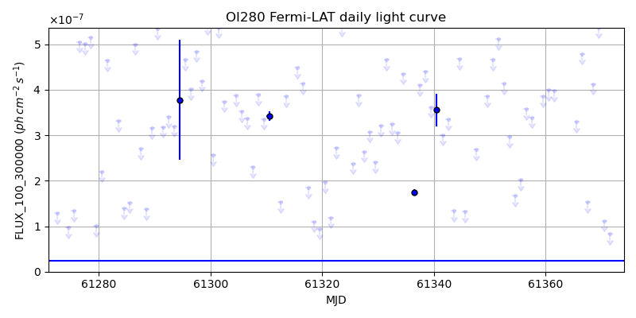
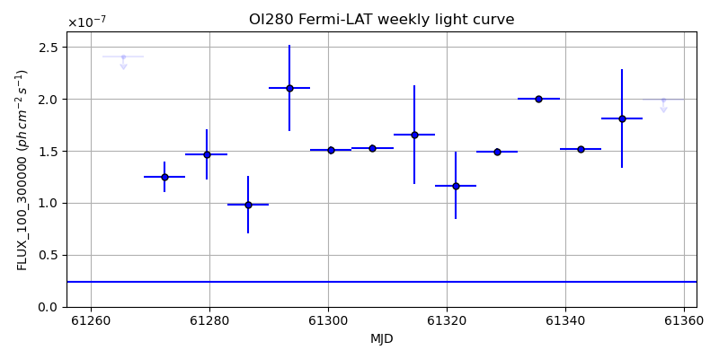
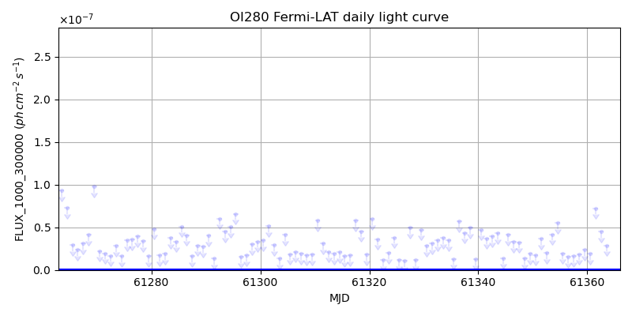

LAT Lightcurve site: https://fermi.gsfc.nasa.gov/ssc/data/access/lat/msl_lc/source/OI_280
NED: Query
Time of last update of this page: UT: 2026-11-28 16:19 (MJD: 61372.680)
| Property | Value |
|---|---|
| R.A. | 7:51:05.28 |
| Dec. | 12:36:50.4 |
| z | 0.889 |
| 3FGL SpectrumType | PowerLaw |
| 3FGL PL Index | 2.41 |
| 3FGL Flux_100_300000 | 2.42e-08 1 / (s cm2) |
| 3FGL Flux_1000_300000 | 9.38e-10 1 / (s cm2) |
| 3FGL Flux >200 GeV | 5.30e-13 1 / (s cm2) |
| 3FGL Extrap. Crab >200 GeV | 0.00 |
| 3FGL Flux After EBL Absorption >200GeV | 1.36e-14 1 / (s cm2) |
| 3FGL EBL Crab Fraction >200GeV | 0.00 |

| MJD | dMJD | Flux | dFlux | Frac3FGL | FracCrab>200GeV | EBLFracCrab>200GeV |
|---|---|---|---|---|---|---|
| 61367.50 | 0.50 | 1.53e-07 | 0.00e+00 | 0.00 | 0.00 | 0.00 |
| 61368.50 | 0.50 | 4.13e-07 | 0.00e+00 | 0.00 | 0.00 | 0.00 |
| 61369.50 | 0.50 | 5.37e-07 | 0.00e+00 | 0.00 | 0.00 | 0.00 |
| 61370.50 | 0.50 | 1.12e-07 | 0.00e+00 | 0.00 | 0.00 | 0.00 |
| 61371.50 | 0.50 | 8.26e-08 | 0.00e+00 | 0.00 | 0.00 | 0.00 |

| MJD | dMJD | Flux | dFlux | Frac3FGL | FracCrab>200GeV | EBLFracCrab>200GeV |
|---|---|---|---|---|---|---|
| 61335.50 | 3.50 | 2.00e-07 | 2.85e-09 | 8.26 | 0.02 | 0.00 |
| 61342.50 | 3.50 | 1.52e-07 | 1.68e-09 | 6.28 | 0.01 | 0.00 |
| 61349.50 | 3.50 | 1.81e-07 | 4.74e-08 | 7.50 | 0.02 | 0.00 |
| 61356.50 | 3.50 | 1.99e-07 | 0.00e+00 | 0.00 | 0.00 | 0.00 |
| 61363.50 | 3.50 | 2.25e-07 | 4.31e-09 | 9.32 | 0.02 | 0.00 |

| MJD | dMJD | Flux | dFlux | Frac3FGL | FracCrab>200GeV | EBLFracCrab>200GeV |
|---|---|---|---|---|---|---|
| 61367.50 | 0.50 | 2.64e-08 | 0.00e+00 | 0.00 | 0.00 | 0.00 |
| 61368.50 | 0.50 | 2.00e-08 | 0.00e+00 | 0.00 | 0.00 | 0.00 |
| 61369.50 | 0.50 | 2.14e-08 | 0.00e+00 | 0.00 | 0.00 | 0.00 |
| 61370.50 | 0.50 | 1.98e-08 | 0.00e+00 | 0.00 | 0.00 | 0.00 |
| 61371.50 | 0.50 | 4.65e-08 | 0.00e+00 | 0.00 | 0.00 | 0.00 |
| MJD | dMJD | Flux | dFlux | Frac3FGL | FracCrab>200GeV | EBLFracCrab>200GeV |
|---|---|---|---|---|---|---|
| 61335.50 | 3.50 | 1.05e-08 | 2.15e-09 | 11.22 | 0.03 | 0.00 |
| 61342.50 | 3.50 | 1.43e-08 | 0.00e+00 | 0.00 | 0.00 | 0.00 |
| 61349.50 | 3.50 | 8.93e-09 | 0.00e+00 | 0.00 | 0.00 | 0.00 |
| 61356.50 | 3.50 | 9.25e-09 | 0.00e+00 | 0.00 | 0.00 | 0.00 |
| 61363.50 | 3.50 | 1.87e-08 | 0.00e+00 | 0.00 | 0.00 | 0.00 |
--------------------------------------------------------- Using user-supplied coords: 7:51:05.28 12:36:50.4 2000 --------------------------------------------------------- FLWO UT night of: 2026-11-29 Local Sid. @ Midnight: 04:08 Sunset (-15.0) (local, UT): 18:31 01:31 Sunrise (-15.0) (local, UT): 05:53 12:53 Moonrise (local, UT): 21:57 04:57 Moonset (local, UT): Moon phase: 0.72 --------------------------------------------------------- AzTime LSID UT Obj_el Obj_az Mn_el Mn_az Sep. --------------------------------------------------------- 18:31 22:39 01:31 -30.4 48.8 -32.9 32.1 14.5 19:01 23:09 02:01 -25.4 54.9 -29.4 38.9 14.8 19:31 23:39 02:31 -20.0 60.3 -25.4 45.0 15.1 20:01 00:09 03:01 -14.3 65.1 -21.0 50.6 15.4 20:31 00:39 03:31 -8.4 69.6 -16.2 55.6 15.7 21:01 01:09 04:01 -1.3 73.7 -11.1 60.2 16.0 21:31 01:39 04:31 4.1 77.6 -5.4 64.5 16.2 22:01 02:09 05:01 10.3 81.5 0.4 68.5 16.5 22:31 02:39 05:31 16.6 85.2 5.8 72.2 16.8 23:01 03:10 06:01 23.0 89.1 11.6 75.8 17.0 23:31 03:40 06:31 29.3 93.1 17.5 79.4 17.3 00:01 04:10 07:01 35.7 97.4 23.6 82.9 17.5 00:31 04:40 07:31 42.0 102.2 29.7 86.5 17.7 01:01 05:10 08:01 48.2 107.9 35.8 90.3 17.9 01:31 05:40 08:31 54.2 114.7 42.0 94.4 18.1 02:01 06:10 09:01 59.7 123.4 48.1 99.1 18.3 02:31 06:40 09:31 64.7 135.1 54.2 104.7 18.4 03:01 07:10 10:01 68.6 150.9 60.1 111.7 18.6 03:31 07:40 10:31 70.7 171.3 65.6 121.1 18.7 04:01 08:10 11:01 70.4 193.4 70.5 134.7 18.9 04:31 08:40 11:31 67.9 212.9 74.0 154.7 19.0 05:01 09:11 12:01 63.7 227.7 75.2 181.1 19.2 05:31 09:41 12:31 58.6 238.6 73.6 206.8 19.3 05:53 10:02 12:53 54.5 244.8 71.0 221.2 19.4 --------------------------------------------------------- Dark hours >55 deg.: 0.00